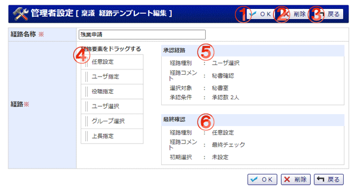

共有経路テンプレートの編集を行う画面です。

機能説明
削除ボタン経路テンプレート削除確認画面へ遷移します。 |
OKボタン経路テンプレートを登録し、登録完了画面へ遷移します。 |
戻るボタン個人設定画面へ遷移します。 |
経路要素個人経路に用いる経路の種別を選択します。 |
承認経路この部分に経路種別から任意の経路要素をドラッグ＆ドロップすることで、承認経路を設定するダイアログが表示されます。そこで任意の設定を行ってください。 |
最終確認この部分に経路種別から任意の経路要素をドラッグ＆ドロップすることで、最終確認経路を設定するダイアログが表示されます。そこで任意の設定を行ってください。 |
表示・入力項目説明
経路名称
経路名称を入力します（20文字以内）。
経路要素：任意設定
稟議申請時に複数のユーザ・グループを選択して経路に設定します。また、経路の数を任意に増減させることもできます。
経路要素：ユーザ指定
ここで指定したユーザ・グループを申請時の経路に設定します。
経路要素：役職指定
ここで指定したグループおよび役職に就いているユーザを申請時の経路に設定します。
経路要素：ユーザ選択
稟議申請時にユーザを選択して経路に設定します。ユーザの選択は指定されたグループに所属するユーザの中から行います。
経路要素：グループ選択
稟議申請時にグループを選択して経路に設定します。グループの選択は指定されたグループの中から行います。
経路要素：上長指定
稟議申請時に申請者が所属するグループを一つ選択します。そのグループから指定された階層数分さかのぼったグループの管理者ユーザを経路に設定します。